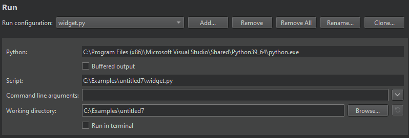
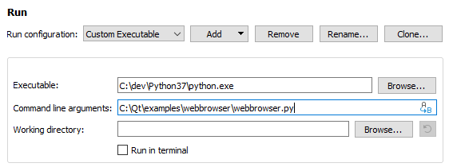

Python Run Settings
Specify settings for running applications on the Run device that you select for a kit in Projects > Build & Run > Run > Run Settings.

The following table summarizes the settings for running Qt for Python applications.
| Setting | Value |
|---|---|
| Python | Path to the Python executable. |
| Buffered output | Stores the output in a buffer. This improves output performance, but causes delays in output. |
| Script | Shows the path to the main file of the project that will be run. |
| Command line arguments | Command-line arguments to pass to the executable. |
Custom Executable Run Configuration
To run some other Python file than main.py, create a custom executable run configuration:

- Select Add > Custom Executable.
- In the Executable field, specify the path to the Python executable.
- In the Command line arguments field, select the Python file to run.
See also Activate kits for a project, Configure projects for running, Create Qt for Python applications, and Develop Qt for Python applications.